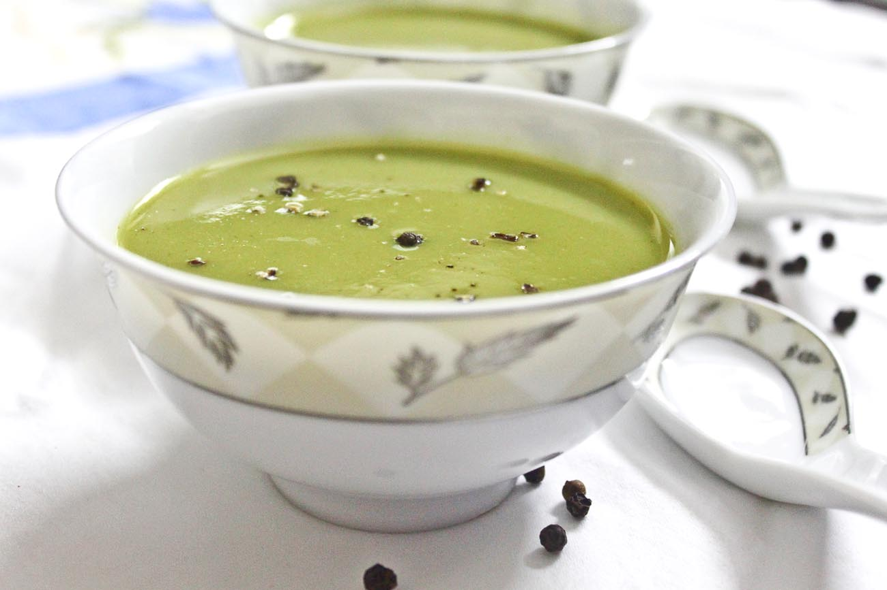

Creamy Broccoli Soup with Tempered Indian Spices

Description
Creamy and surprisingly filling, plus the touch of Indian spices make this the best broccoli soup I've ever had!
Ingredients
- Produce: 1 yellow onion (roughly diced), 3 cloves garlic (minced), 2 heads broccoli (stalks and florets), 3 handfuls fresh spinach
- 2 tbsp olive oil, 1 tsp cumin, 1 tsp coriander, 1/4 tsp cayenne, salt and pepper to taste
- 1 can full fat coconut milk, 3 cups vegetable broth
- Finishing tempered spices: 2 tbsp EVOO or avocado oil, 1/2 tsp mustard powder, 1/2 tsp cumin seeds, 1 tsp sliced garlic, 2 whole dried red chiles
Steps
- Heat olive oil in a large, deep pot. Once the oil is shimmering, add the onions and cook until they start to brown slightly. Add the garlic and cook with the onions for 2 minutes. Add the cumin powder, coriander powder, cayenne powder, salt, and pepper. Roast with the onions an garlic for about 2 minutes.
- Trim the end of the broccoli, then cut it into florets. Slice the stalks. Add just the slices stalks to the pan. Cook for a couple minutes, then add the coconut milk and vegetable broth. Cover and simmer until the broccoli stalks start to become tender. Then add the floret and cover again until the florets are bright green and tender. Season with salt and pepper to taste. Add spinach and cook until it wilts.
- Transfer the soup in increments to a blender and blend on high until completely smooth.
- Heat your olive oil. Once hot, toss a couple cumin seeds in to check if the oil sizzles. Then add in the mustard powder, cumin seeds, dried chiles, and finally sliced garlic. Turn the heat to medium and swirl the spices in oil until garlic is just golden. Take off the heat, and serve over the soup.